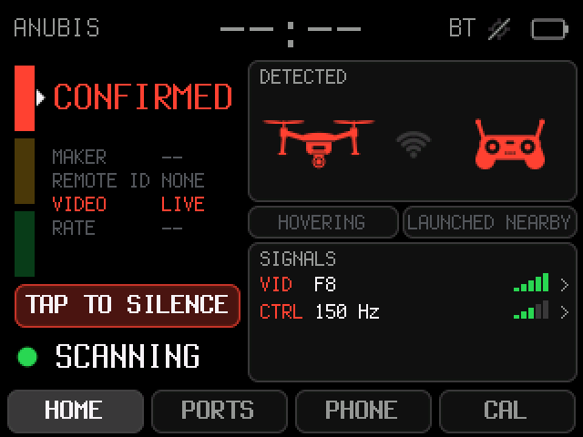
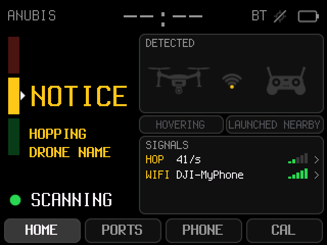
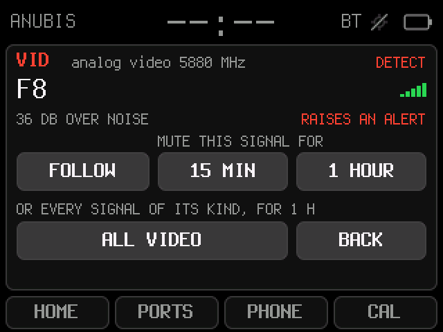
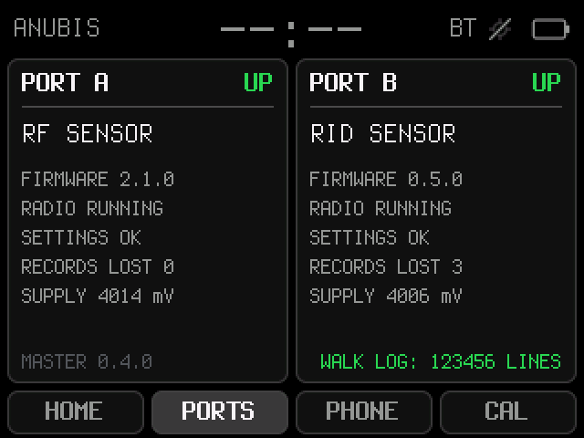
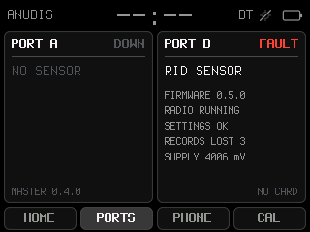
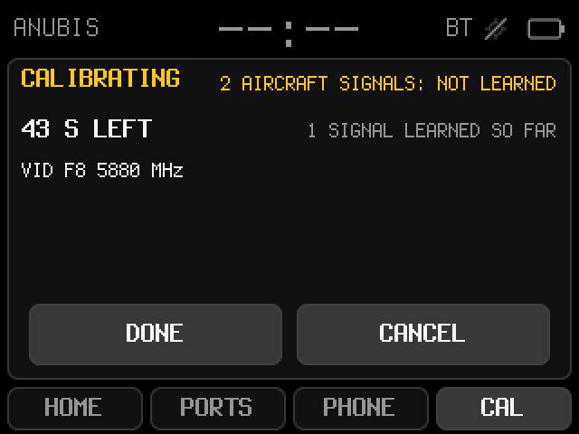
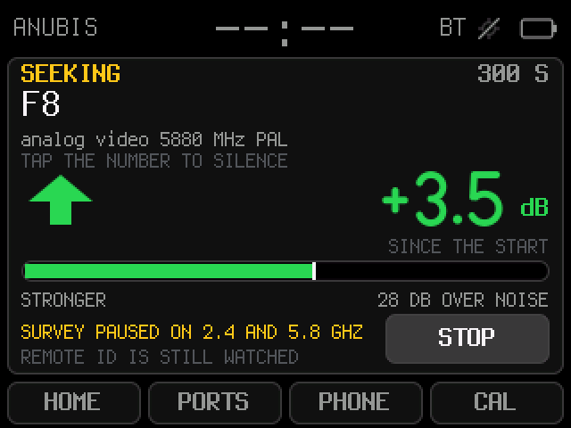

This guide applies to master firmware 0.12.0, which is the Beta release on the firmware page. The Beta has a landscape screen. The Alpha release has a portrait screen, so its screens differ from the ones shown here. Commands that start with python3 tools/ need the project's tools, which aren't publicly available.
User guide
What a finished unit shows, sounds and logs, what each button does, and what the unit can and cannot detect today. Written for a person who has the unit in the hand and did not build it.
- What this describes: master firmware 0.12.0 (the landscape screen), Remote ID sensor 0.7.3 and the RF sensor with its check of the packet rate, as they stood on 16 Nov 2026
- Shorter: the quickstart takes a unit to its first alert, and the how-to pages have one task each
- Each sensor has a page of its own: the Remote ID sensor and the RF sensor. A page on power and charging and a page on the phone app are still to come
- Where this guide and the firmware disagree, the firmware is right and the guide has the mistake
How sure each statement is:
| Word | Meaning |
|---|---|
| read | Taken from the firmware's code, or from the page or maker's page linked beside it |
| measured | Seen on hardware. The page linked beside it says when and on what |
| estimated | Worked out from those figures |
A statement about what the unit does is read unless it says otherwise. The pictures of the screens are painted on a computer by the firmware's own painting code (how); they are what the panel is sent, and they are not photographs of a unit.
Contents
- What the unit is
- The parts
- Switching on and off
- The screen
- The four levels
- What is in the list
- Sounds
- Sensitivity and the other settings
- Calibration: the signals of a place
- Mutes
- Following one signal
- The phone
- The receiver's position
- The card and the walk log
- The battery reading
- When part of the unit is not working
- What it can and cannot detect today
- Glossary
What the unit is
A passive detector for small unmanned aircraft and their remote controls. Two sensor boards listen. The master board turns what they report into one alert level, shows it on its screen, sounds it, writes it to a card and sends it to a phone.
- It only receives. Neither sensor transmits on any radio. The master transmits one thing: its Bluetooth link to the phone.
- It reports signals. An alert says that a signal of a kind that aircraft and their remote controls use is on the air where the unit stands. A remote control that lies switched on raises the same alert as one that is flying something.
- It does not measure distance or direction. The screen shows how strong a signal is at the unit and whether it grows or fades. It does not turn that into metres, and nothing on it is a range.
- CLEAR does not prove that nothing flies. The sensors move from channel to channel and miss what happens where they are not listening, and several kinds of aircraft are not heard at all. What it can and cannot detect today lists them.
- What a broadcast says is a claim. A Remote ID names an aircraft and the unit shows that name. It does not check it.
The parts
| Part | What it does for you | Its own page |
|---|---|---|
| The master: a Waveshare ESP32-C5-Touch-LCD-2.8 | The touch screen, the speaker, the card slot, the Bluetooth link, the power button. It holds the cell | master |
| The Remote ID sensor (RID sensor): a Seeed XIAO ESP32-C5 on a Wio-SX1262 board | Listens on Wi-Fi and Bluetooth for Remote ID, for Wi-Fi networks and links that look like a drone's, and watches one channel of the 868 MHz band | Its user's page |
| The RF sensor: a second XIAO ESP32-C5 | Surveys 2.4 and 5.8 GHz for control links and video links | Its user's page |
| Three antennas | One for 2.4 and 5.8 GHz on each sensor, one for 868 MHz on the Wio board. A sensor without its antenna looks alive and hears almost nothing (read: wiring guide) | wiring guide |
| A 3.7 V lithium polymer cell | Runs the unit away from USB | wiring guide |
| A TF card, if you want a log | Keeps what was detected, when, and where the unit was | The card and the walk log |
| A phone with the app, if you want one | Shows the alerts, notifies you, sets the sensitivity and the master's clock | android |
- The two sensors hang on the master's two ports, A and B. Which sensor sits on which port does not matter: each one tells the master what it is.
- A user's page for power and charging and one for the phone app are still to come. Until they exist, the wiring guide and the app's own notes in the right-hand column are what there is.
Switching on and off
| To | Do | What happens |
|---|---|---|
| Switch on | Hold the master's power button for about 1 s (read: wiring guide) | Four rising notes, then the Home screen. Each sensor is usually linked within a second or two, and the light at the lower left then reads SCANNING in green (measured, 14 Nov 2026: master) |
| Switch off | Hold the button for about 2 s (read: the same page) | The screen goes dark |
| Run from USB | Plug a supply into the master's own USB-C socket | The unit runs from it and the cell charges at 0.27 A (read: wiring guide). Use a supply rated 2 A or more and a short cable; a computer's port may sag (estimated there) |
Three things to know:
- The button does not switch the sensors. They stay powered for as long as a cell or any USB cable is connected. A dark screen does not mean that the unit is off.
- Unplug the cell when the unit is not in use. The sensors are meant to sleep while the master is off, and that sleep has not been tested on either sensor (read: both sensor READMEs). Two sensors that never sleep empty a 1000 mAh cell in hours to a day (estimated: wiring guide).
- Do not run the unit from a sensor's USB socket alone. The master and the other sensor then starve and restart over and over (read: case 5 of the wiring guide's table).
Not measured: how long a full cell runs the unit. The master gives no warning when the cell is low and switches nothing off: watch the battery picture.
The master does not keep the time while it is off. After every start its clock is unset until a phone connects or a program on USB sets it.
The screen
The screen is a landscape page with a touch panel. A bar runs along the top of every screen and four buttons along the foot: HOME, PORTS, PHONE and CAL. Two more screens have no button and come up by themselves: a signal's own screen after a tap on its row, and the Seeker screen while one signal is followed.
The screen gives no distance. Nothing on it is a range, and nothing on it should be read as one.
The top bar
| On it | What it says |
|---|---|
| ANUBIS | The name of the screen's design. It is the same on every unit |
| The time | The master's clock, once a phone or a computer has set it. Dashes until then. It ends in UTC when whoever set it did not say where its wall clock stands |
BT |
The phone link: blue while a paired phone is connected, yellow while pairing is open or a phone asks to pair, grey otherwise |
| A small position mark | Lit while a phone gives the unit its position, struck out while none does |
| A picture of a cell | The charge. Red when it is low. See The battery reading |
Home

The left side is the level.
| Part | What it shows |
|---|---|
| The ladder | Three steps: green for CLEAR, yellow for NOTICE, red for DETECT and CONFIRMED. The step of the level in force is lit, and the level stands beside it in large letters. At CONFIRMED the red step blinks |
| At NOTICE | A word or two for each of the first two things to look at: HOPPING, DRONE NAME, WI-FI CARRIER, SUB-GHZ |
| At DETECT and CONFIRMED | Four short lines: MAKER (filled in when DJI's own element was heard), REMOTE ID (ON when one is heard), VIDEO (LIVE when one is heard) and RATE, which the unit has nothing to put in yet. Under them the button TAP TO SILENCE |
| With only known signals | "3 KNOWN SIGNALS" over CLEAR |
| The light at the foot | SCANNING in green while every sensor is at work. SCANNING in yellow with a warning sign when the unit hears less than it should: a sensor is missing, the 868 MHz radio has stopped, or one signal is being followed. NO RADIO in red when no sensor is up |
A tap anywhere on the left side silences the alert that is showing, until something new arrives: another signal, a higher level, or another kind of evidence. It then reads SOUND OFF.
The right side is what was heard.
DETECTED holds three pictures: an aircraft, the sign of a Wi-Fi link, and a controller. Each is red only for what was heard, so the pictures say what kind of thing is on the air and not more than that.
| What is heard, at DETECT or above | The aircraft | The Wi-Fi sign | The controller | |
|---|---|---|---|---|
| A control link alone | Not lit | Not lit | Red |  |
| Video alone | Grey, with its camera in red | Not lit | Not lit |  |
| Control and video together | Red | Not lit | Red |  |
| Remote ID, or DJI's own element | Red | Not lit | Red if a control link is heard too |  |
| An aircraft's own Wi-Fi network | Red | Red | Not lit |  |
| A Wi-Fi link in use | Red | Red | Red |  |
- A red controller alone means a remote control is switched on. It does not say that anything is flying.
- A red camera alone means a video transmitter is on the air. That may be an aircraft's. It may also be a fixed wireless camera, which sends the same kind of signal.
- A signal that is only a notice lights nothing in red: at most the sign's dot or a picture turns yellow. A known or a muted signal lights nothing.
- The two cards under the pictures, HOVERING and LAUNCHED NEARBY, are dim on every screen. The unit has nothing to put in them yet.
SIGNALS holds up to four rows, one for each signal, in this order: what raises the alert, then notices, then known signals, then muted ones. With more, the last line says "+2 MORE".
| Part of a row | What it shows |
|---|---|
| The tag | Which kind it is: RID, DJI, LINK, WAIR, WIFI, CTRL, HOP, VID or SUB. Red for a signal that raises an alert, yellow for a notice, grey for a known signal, and MUTE for a muted one |
| The name | An aircraft's ID, a network's name, an FPV channel such as F8, a packet rate such as 250 Hz. FAINT behind a video signal's name means the sensor no longer calls it video and still tracks something on its frequency |
| Five bars | How strong it is at the unit. One bar is 10 dB, or 6 dB for control and video on 2.4 and 5.8 GHz. A known row says KNOWN in their place, and a muted row the minutes left |
> |
A tap on the row brings up that signal's own screen, which also says what it is and where |
What is in the list explains every kind.



A signal's own screen
A tap on a row brings it up.

| On it | What it does |
|---|---|
| The tag, and what and where | "analog video 5880 MHz", "control 2.4 GHz", "aircraft network ch 6", "wi-fi name ch 11" and the like |
| Its name and bars | As on its row |
| Its level in figures | "36 DB OVER NOISE" for what the RF sensor hears, a level in dBm for the Remote ID sensor and the 868 MHz watch |
| How it stands | RAISES AN ALERT; A NOTICE: LISTED, AND SILENT; known; MUTED with the minutes left; or NO LONGER ON THE LIST |
| FOLLOW | Begins following this signal. Lit only for a signal that can be followed |
| 15 MIN, 1 HOUR | Mute this signal for that long |
| UNMUTE | Stands in their place while the signal is muted, and lifts every mute that covers it |
| ALL VIDEO, ALL CONTROL and the like | Mute every signal of its kind for an hour |
| BACK | The list again. The buttons at the foot do the same |
Ports
One block for each of the master's two ports.

| Line | Read it as |
|---|---|
| UP, in green, at the top right | The sensor is linked and listening. Yellow words mean it is starting or has paused for a moment, FAULT in red that it reports a failure, DOWN in grey that nothing is heard from it. When part of the unit is not working has the states |
| RF SENSOR, RID SENSOR, NO SENSOR | Which sensor has reported on this port |
| FIRMWARE | That sensor's version |
| RADIO RUNNING | The sensor is listening. HELD and STOPPED mean it is not, ERROR that its radio has failed |
| SETTINGS OK | The sensor took the master's settings |
| RECORDS LOST 0 | Records that went missing between the sensor and the master. A number that keeps growing means a bad connection |
| SUPPLY 4014 mV | The voltage the sensor measures on its supply. A check of the supply, not a battery gauge |
At the foot: the master's version on the left; on the right the card, "CARD: 16 LINES" in green while a log is written, "WALK LOG: 16 LINES" while the walk log is on, CARD FULL, CARD NOT USABLE or NO CARD. With a cell fitted, its voltage and the charge it stands for are there too.

Phone
| The screen shows | Meaning and buttons |
|---|---|
CONNECTED or NOT CONNECTED, how many phones are remembered, and the name this master has in the phone app, as in UAS Master-1A2B |
PAIR A PHONE opens pairing for 120 s. FORGET PHONES forgets every remembered phone and ends the connection |
| PAIRING IS OPEN, with the seconds left | Choose the master in the app now. CANCEL closes pairing |
| PAIRING REQUEST | A phone has tried to pair. ALLOW shows the code; REFUSE turns the phone away. The request waits 20 s |
| TYPE THIS CODE ON THE PHONE, and six digits | The code is good for this one pairing. CANCEL ends it |
| NO ROOM LEFT: FORGET PHONES FIRST | Three phones are remembered and the master never drops one to make room |
| BLUETOOTH IS OFF | The Bluetooth link did not start |
The pairing request and the code come up by themselves, whatever screen is showing, except over an alert at DETECT or above. The PHONE button is then one tap away. The phone has the rest.
Cal
For calibration.

| The screen shows | Buttons |
|---|---|
| How many signals are known, what the last run did ("LAST RUN: 4 NEW, 0 STRONGER"), and the known signals a line each | 30 S, 60 S and 5 MIN begin a calibration of that length. FORGET ALL empties the list |
| "NO ALERT FOR 4 MIN 12 S" in green | How long the unit has raised no alert, counted afresh from the start, from the end of a calibration and from a forget. ALERT NOW in red while one stands. It is the line to watch after a calibration |
| While one runs: CALIBRATING, the seconds left, and what it has learned so far | DONE ends it and keeps what it learned. CANCEL ends it and keeps nothing of it |
| "1 AIRCRAFT SIGNAL: NOT LEARNED" in yellow | A Remote ID or DJI's own element was on the air during the calibration. Such a signal is never learned: see below |
| "NO ROOM FOR 2 MORE: FORGET SOME" | The list holds thirty-two signals and was full |
| "PORT B NOT UP: NOT LEARNED FROM" | A sensor was missing during the run, so nothing of its kind was learned |
The yellow line KEEP DRONES AND REMOTES OFF MEANWHILE is the rule that matters: a video transmitter, a remote control and an aircraft's own Wi-Fi network that are on the air during a calibration are learned.

The Seeker screen
Up for as long as one signal is followed, whoever began it.

| On it | Meaning |
|---|---|
| SEEKING and seconds | How long the seek may still last |
| The signal's name and what it is | As on its row. For analog video also PAL or NTSC once the sensor has worked it out |
| An arrow and a number, "+3.5 dB", SINCE THE START | Up and green: the signal is growing. Down: fading. The number is the change since the seek began |
| A bar, and "28 DB OVER NOISE" | The signal over the noise, with a white mark at its highest so far |
| STRONGER, WEAKER, STEADY, SIGNAL LOST, TUNING TO THE SIGNAL | The same in a word |
| SURVEY PAUSED ON 2.4 AND 5.8 GHZ and REMOTE ID IS STILL WATCHED | What following costs: see below |
| STOP | Ends the seek. So does any button at the foot |
A tap on the number silences the sound, as a tap on the left side of Home does.
The backlight
After 30 s without a touch the backlight drops to a fifth of its setting. A touch brings it back, and so do an alert at DETECT or above and a pairing. It never goes out by itself: only a brightness setting of 0 switches it off.
The four levels
| Level | On the ladder | Sound | What raises it |
|---|---|---|---|
| CLEAR | Green | None | Nothing is in the list, or only known and muted signals |
| NOTICE | Yellow | None | Something is on the air that could belong to a drone and is not enough by itself: a network with a drone maker's name, hopping energy on 2.4 GHz, a Wi-Fi carrier on 5.8 GHz, bursts on 868 MHz. Also a stronger kind of evidence that is too weak or too new for the sensitivity level in use |
| DETECT | Red | Beeps | One signal of a kind that is evidence by itself: Remote ID, DJI's own element, a Wi-Fi link, an aircraft's own Wi-Fi network, a verified control link on 2.4 GHz, video on 5.8 GHz, a control link on 868 MHz |
| CONFIRMED | Red, blinking | A warble | Two such signals of different families, each last seen within 10 s of the other |
The four families are beacon (Remote ID and DJI's element), Wi-Fi link (a link, and an aircraft's own network), control (on 2.4 GHz and on 868 MHz) and video (analog and digital). Two video signals do not confirm each other; a video signal and a control link do.
- DETECT says that a signal of that kind is on the air. It does not say that an aircraft is flying. A remote control that lies switched on raises it, and so does a fixed wireless camera on a video channel. The pictures say which kind was heard.
- A muted or a known signal never raises the level.
- A signal that counts only as a notice confirms nothing. Neither does a video signal that is listed as FAINT.
- A signal stays in the list for a while after it was last heard: 30 s for Remote ID, DJI's element, a Wi-Fi link and a Wi-Fi name; 10 s for video; 5 s on 868 MHz; 3 s for control, hopping and a Wi-Fi carrier. The RF sensor itself holds a control link for 8 to 11 s after its last packet (read: RF sensor's notes), so a control row goes 11 to 14 s after the transmitter is switched off (estimated from those two figures).
The rules are in alert_logic.
What is in the list
The tag is on the signal's row. The words are on its own screen, one tap away.
| Tag | Words on its own screen | What it is | Alone it gives |
|---|---|---|---|
RID |
"wifi ch 6", "nan", "bt4", "bt5", "bt-lr", "fr" | An aircraft that broadcasts its identity, which is called Remote ID. The words say how it arrived: in a Wi-Fi beacon, in a Wi-Fi NAN frame, by Bluetooth 4, Bluetooth 5 or Bluetooth long range, or in the French format. The name is the ID it claims | DETECT |
DJI |
"dji element ch 6" | A Wi-Fi frame that carries DJI's own element. The sensor recognises it and does not decode it. Never tried with a real aircraft | DETECT |
LINK |
"wi-fi link ch 36" | A device with a drone maker's address or a drone's network name, with data flowing both ways between it and another device: a link in use | DETECT |
WAIR |
"aircraft network ch 6" | A Wi-Fi network that names itself with a name aircraft give their own networks, such as TELLO or HolyStone: an aircraft that is flown from a phone and is switched on. The names are on the Remote ID sensor's list. A name can be changed or copied |
DETECT |
WIFI |
"wi-fi name ch 11" | A network or a device that looks like drone equipment by its maker's name or address, where the name could be anything's: a phone's hotspot named DJI-something reads the same. Also a controller's network, and a phone that only asks for an aircraft's network |
NOTICE |
CTRL |
"control 2.4 GHz" | A hopping transmitter on 2.4 GHz whose packets keep to a rate that a control link has. The name is the rate, such as "250 Hz" | DETECT |
HOP |
"hopping 2.4 GHz" | Hopping bursts on 2.4 GHz that the sensor could not verify as a control link. Bluetooth hops too. The name is the bursts a second | NOTICE |
VID |
"analog video 5880 MHz", "digital video 5807 MHz" | A steady carrier on 5.8 GHz with the shape of a video transmitter. The name is its FPV channel, such as F8, or its frequency | DETECT |
VID, with FAINT |
"faint analog 5880 MHz" | A video signal the sensor no longer calls video, while it still tracks something on that frequency. The row stays for a minute at most after it was last video | DETECT, and it confirms nothing |
WIFI |
"wi-fi carrier 5805 MHz" | A wide carrier on 5.8 GHz that the sensor takes for a Wi-Fi network | NOTICE |
SUB |
"control 866 MHz" | The kind of signal ExpressLRS uses on 868 MHz (LoRa), heard on the watched channel in several different seconds. The name gives the channel and the signal's speed, as in "866.4 MHz SF9" | DETECT |
SUB |
"bursts 866 MHz" | Such detections, too few to be a link | NOTICE |
A row that should give DETECT and has a yellow tag is being held back by the sensitivity level: too weak, or not there for long enough yet. Nothing is hidden for that reason. It stays in the list as a notice.
Sounds
The sounds work as a radar detector's do: the pitch says which family the strongest signal belongs to, and the pace how strong it is.
| Family | Pitch |
|---|---|
| Beacon: Remote ID, DJI's element | Lowest |
| Wi-Fi link, and an aircraft's own network | Higher |
| Video | Higher still |
| Control | Highest |
- DETECT: three quick beeps, then single beeps: one every 1.6 s for the weakest signal, one every 0.22 s for the strongest.
- CONFIRMED: a warble between two pitches, long at first and short after that, with shorter pauses the stronger the signal.
- NOTICE and CLEAR are silent.
- After 6 s an alert goes on at about a third of the loudness. A higher level, another signal or another family starts it afresh.
- A tap on the left side of Home silences the alert that is showing until something new arrives.
- At power-up the four pitches play once, lowest first.
The pitches in hertz and the rest are in the master's README.
Sensitivity and the other settings
Each kind of sensor has a level of its own: low, medium or high. Medium is what a new unit has. High is for the most reliable detection. Low is for few false alarms, while a signal that is really there is still detected.
| Sensor | What a lower level changes |
|---|---|
| RF sensor: control and video on 2.4 and 5.8 GHz | A signal must stand further over the sensor's noise. At low a video carrier must also stand for 3 s and a control link for 15 s before it is more than a notice |
| Remote ID sensor | A decoded ID counts at every level. At low an ID, a Wi-Fi link or an aircraft's network that is heard only weakly is a notice and makes no sound, and the other Wi-Fi names are not listed at all. At high the list also holds devices that only ask for a drone's network |
| The 868 MHz watch | At every level the sensor checks each detection three times and all three must agree. The level changes in how many different seconds a signal must be heard, and how long control must stand before it is more than a notice: 10 s at low, 8 s at medium, not at all at high |
- The values behind each level, and where they were measured, are in the master's README.
- Except for those Wi-Fi names, a lower level hides nothing: what is too weak for it stays in the list as a notice.
- Measured on one bench on 14 Nov 2026, one run each: every test source was detected at every level, and no level reported anything in two quiet minutes (master).
The unit's own screen has no page for settings. They are changed from a phone or from a computer on the master's USB socket, and the master keeps them in its flash over a restart (measured: master).
| Setting | What it does | Where to change it |
|---|---|---|
| The three sensitivity levels | Above | The app, for all sensors or for each (android); or over USB |
volume |
The loudness, 0 to 100; 0 is silent. A new unit has 60 | Over USB |
brightness |
The backlight, 0 to 100; 0 is off. A new unit has 70 | Over USB |
region |
DE or US: which channel of the sub-GHz band is watched, 866.425 MHz or 915.5 MHz, and the country the Remote ID sensor is told. The second channel is read from a channel plan and has never been tried |
Over USB |
walk_log |
Whether the card also holds what the sensors measure: see the walk log | Over USB |
How to change a setting over USB has the commands.
Calibration: the signals of a place
A place has signals of its own that are not a drone and that no rule can tell from one: a neighbour's telemetry on 868 MHz, a wireless camera on 5.8 GHz, a network with a drone's name. A calibration learns them. Calibrate on arrival at every new place.
- What it does. For 30 s, 60 s or 5 minutes the master learns the signals that are in the list or appear: what each is, and the strongest it was heard. From then on such a signal is known. It stays in the list in grey, says KNOWN, and raises neither the level nor a sound, with no time limit.
- Take 60 s or 5 minutes. A signal has to show while the calibration runs to be learned. One that comes and goes, or that the sensor calls video only some of the time, is missed by a short run and alerts later (measured, 15 Nov 2026: of two fixed cameras at one place, a run of 30 s learned one, and the other alerted twice afterwards).
- A fixed wireless camera is what a calibration is for. It is a real video transmitter, the unit is right to list it, and no check can tell it from an aircraft's. Once it is learned it stays quiet (measured, the same day).
- What an aircraft broadcasts about itself is never learned: Remote ID and DJI's own element. Such a signal alerts during a calibration as at any other time, and the Cal screen says in yellow how many there were.
- Everything else on the air is learned, so switch your own equipment off first: every aircraft, remote control, video transmitter and pair of goggles. A video transmitter and a control link are learned like any other carrier and any other hopping link. So is the Wi-Fi network of an aircraft that is flown from a phone, and its link.
- A known signal does not hide a stronger one on the same frequency. What was learned holds up to the level it was learned at and 10 dB more. Heard stronger than that, the signal alerts as it would have, until it has been back under that level for 10 s.
- What counts as the same signal. A video or Wi-Fi carrier by its frequency, a control link on 2.4 GHz by its sensor and packet rate, the 868 MHz channel as a whole, everything else by its name or address. On 868 MHz, bursts that were learned stay quiet as bursts and do not hide a control link that comes onto the channel later.
- Thirty-two signals are kept. They are stored in the master and are there after a restart. A calibration only adds: what was known before stays known. FORGET ALL on the Cal screen empties the list, which is the thing to do when the unit has moved to another place.
- A calibration cannot run while a signal is followed, and the other way round.
Afterwards, read what was learned, line by line, and watch the green line "NO ALERT FOR" grow.
Not checked: a calibration in a place with more than a few signals, and whether 10 dB is the right margin everywhere (read: master, which has the full rules).
Mutes
A mute is for a time, where a calibration is for a place. It needs no quiet minute to learn in, and it ends by itself.
- From a signal's own screen: 15 MIN or 1 HOUR for this one signal, or the button that names its kind (ALL VIDEO, ALL SUB-GHZ and so on) for every signal of that kind, for an hour.
- A muted signal stays in the list, faint, with
MUTEfor its tag and the minutes left. It raises neither the level nor a sound. - One signal is the signal, whatever the sensor calls it the next time. A muted carrier is muted as analog video, as digital video and as a Wi-Fi carrier near that frequency. A muted control link on 2.4 GHz is also muted while it is only hopping energy.
- UNMUTE on the signal's screen lifts every mute that covers it.
- A restart of the master forgets every mute. Known signals survive a restart; mutes do not.
- The list holds twelve mutes, and a mute of a whole kind takes up to three of them.
A mute of a whole kind makes the unit deaf to that kind for the hour. Muting ALL VIDEO because of one camera also mutes the video of an aircraft that arrives later. Mute the one signal where you can.
Following one signal
The list says that something is there. Following answers the next question, several times a second: is this one signal getting stronger or weaker? It is what the firmware calls seeker mode.
- What can be followed: a video carrier and a verified control link on 2.4 GHz. Nothing the Remote ID sensor hears can be.
- It needs an RF sensor build that has the seeker in it (read: RF sensor's page). With a build that lacks it, FOLLOW stays unlit.
- How: tap the signal's row, then FOLLOW. The Seeker screen comes up. From the screen a seek lasts 300 s at most; STOP or any button at the foot ends it sooner.
- What it costs: while one signal is followed, the RF sensor does nothing else. The survey of 2.4 and 5.8 GHz stands still, the signals it had listed are held as they were, and a new control or video link is not noticed until the seek ends. Remote ID and the 868 MHz watch go on.
- The sound changes to short beeps in the pitch of what is followed, faster the stronger the signal is: 1.3 s apart with no signal over the noise, 0.2 s apart at 50 dB.
- What the number means: decibels of change since the seek began. It is the level at the unit and not a distance. Walking towards a transmitter usually makes it rise, and walls, bodies and reflections make it fall and rise as well.
Measured on a bench on 14 Nov 2026 with stepped signals; not measured on a walk towards a real transmitter (master).
The phone
The unit works without a phone. A phone adds three things: alerts where you are looking, the sensitivity levels, and the time of day, which the master takes from the phone at every connection.
What the app shows and how to use it is the app's own page: android. This is the master's side.
- The link is Bluetooth LE. In the app the master is called
UAS Master-and four characters of its own, as the Phone screen shows. - Pairing takes someone at the master. Either the phone simply tries, the master shows "Pairing request", and you press ALLOW. Or you press PAIR A PHONE first. Then the master shows a six-digit code and you type it on the phone. Android ends a pairing about half a minute after it began (measured, 14 Nov 2026: master), so type promptly. ALLOW keeps pairing open for 120 s, so a second try needs no second press.
- Three phones are remembered, also over a restart. A remembered phone reconnects by itself without a code.
- One phone at a time. While one is connected, others cannot find the master. PAIR A PHONE disconnects the phone that is connected.
- FORGET PHONES forgets all of them.
- The clock. The master takes whatever time the phone sends. A phone whose own clock is wrong sets the master's clock wrong, and every line of the log with it (measured, the same page: a phone 23.6 days behind).
- What a phone gets is what the screen has: the level, the list, the state of the ports, the battery. Only a paired phone gets anything; the link is encrypted.
Paired and used with one Android phone on 14 Nov 2026 (measured: the same page). Not tried: an iPhone, a second phone beside the first, pairing from across a room.
The receiver's position
The master does not know where it is. A phone or a program on USB can tell it, and the master then puts that position into every alert it sends and into the alerts it writes to the card.
- It is the receiver's position, the place where the unit stood when it heard the signal. Nothing the unit records is the position of an aircraft, and one position with a level is no bearing.
- The position itself is not shown on the screen. The master forgets it after 10 minutes without a new one, and at every restart.
- Whether your app sends the phone's position to the master depends on its version: see the app's notes. The mark in the top bar is lit while the master has one.
- A position is personal data. A card that holds alerts holds the places they were raised at: treat it as you treat a phone.
The command and its limits are in the master's README.
The card and the walk log
With a TF card in its slot the master keeps a log of its own: what it detected, when, and, if it was given one, where the unit was. It is there without a phone, and it stays with the unit.
- The card must be formatted FAT16 or FAT32, which is how cards of up to 32 GB are sold. A larger card comes formatted otherwise and reads as "card not usable" until it is formatted FAT32 on a computer. The master never formats a card and never deletes anything on it.
- Put the card in before you switch on. The master looks for a card at the start and, while there is none, once a minute. A card put in while the master runs has not been tried (read: master).
- Files are
UASLOG/UAS00001.LOGand up, a new one each time the master starts. With less than 8 MB of room the card is called full and nothing more is written. - What is written: which firmware and settings wrote the log, then every alert: at once when the level changes, every 5 s while the level is DETECT or CONFIRMED, once a minute at NOTICE. Nothing while the level is CLEAR. A known or muted signal adds no line by coming and going.
- Times. Lines carry the time of day once the clock is set. Lines written before that are dated by the time since the start.
- The Ports screen says how the card stands: "CARD: 16 LINES", CARD FULL, CARD NOT USABLE or NO CARD.
- If a write to the card fails, the master lets the card go and looks for it again a minute later, in a new file. A log can so have a gap of a minute (measured, 15 Nov 2026, five times on two units).
The walk log is a setting, walk_log, for measuring reception. With it on, the card also holds what the sensors measured, every second, whether or not anything was listed, and every position a client gives. The Ports screen then reads WALK LOG where it read CARD.
- It is off unless somebody sets it, and it stays as it was set over a restart.
- With it on, the card is a record of where the unit has been for as long as it is given positions. Switch it off after the walk.
- Nothing the Remote ID sensor decodes is written by it: those records name other people's aircraft and devices.
How to record a walk has the steps. The lines themselves are described in the master's README.
The battery reading
The picture in the top bar and the figures on the Ports screen come from the voltage of the cell.
- The percentage is an estimate from the usual curve of a 3.7 V lithium polymer cell. It is not calibrated, and it has not been compared with a meter or followed over a discharge (read: master).
- On charge the picture is full or nearly full, because a cell on charge reads higher than it is. Unplug USB to see the charge.
- Cold, age and load all make a cell read lower than it is.
- A low cell makes no sound, raises no alert and switches nothing off.
When part of the unit is not working
The light at the lower left of Home says whether the unit hears all it should, and the Ports screen says how each sensor's port stands.
| State on the Ports screen | Meaning | What to do |
|---|---|---|
| UP, green | The sensor is linked, has the master's settings, and its radio runs | Nothing |
| JOINED, READY, STARTING, yellow | The sensor has answered and is being set up. Normal for a second or two after a start | Wait |
| STALE, yellow | No record from the sensor for 3 s | Wait. It turns green again when records resume, or grey after 10 s |
| DOWN, grey, with NO SENSOR | Nothing valid from the sensor for 10 s, or nothing since the start | See below |
| FAULT, red | The sensor reports that its radio failed, or it did not take a command three times, or it is a build this master cannot talk to | See below |
- While a port is not UP, the unit is deaf to what that sensor hears. Home's light then reads SCANNING in yellow with a warning sign, or NO RADIO in red when neither sensor is up, and the alert the master sends to the phone says that coverage is reduced.
- A radio fault is mended by the master where it can be: it tells the sensor to restart 5 s into the fault, again a minute later, and three times at most.
- A port that stays DOWN or FAULT needs the whole unit off. A hung sensor cannot be power-cycled by the master's button: unplug the cell and every USB cable, wait a few seconds, and connect them again.
- A port that is green may still be partly deaf. The Remote ID sensor's 868 MHz radio can stop answering while the sensor goes on with Remote ID. The master notices within 10 s and reports reduced coverage.
- While a signal is followed the survey of 2.4 and 5.8 GHz is paused, which is also reduced coverage. The Seeker screen says so.
More symptoms and what to do about them: When something is wrong.
What it can and cannot detect today
By kind of aircraft. "Today" is 16 Nov 2026. No row is a promise of range. Each sensor's own page says more: Remote ID sensor, RF sensor.
| Kind | What the unit does | How sure |
|---|---|---|
| An aircraft that broadcasts Remote ID on Wi-Fi or Bluetooth | DETECT, with the ID it claims as the name | Measured with the project's own bench transmitter and a made-up identity, 15 Nov 2026: a Wi-Fi beacon on channels 6 and 36, NAN, the French format, Bluetooth 4, and Bluetooth 5 on both of its modes each gave DETECT, within 0.4 to 8 s. Not measured: a real aircraft. Read: the 5 GHz channels 52 to 144 are not listened to |
| A DJI aircraft that does not broadcast Remote ID | Its own link is not Wi-Fi, and the unit has no decoder for the identity DJI sends inside it. Such an aircraft is listed only if the RF sensor takes its link on 5.8 GHz for digital video. On 2.4 GHz, where that link may equally be, the RF sensor does not look for video | Read. Digital video of that kind was shown with a bench signal source on 5.8 GHz only. No real DJI aircraft has been in front of the unit |
| Analog video on 5.8 GHz | DETECT, named by its FPV channel | Measured with a real transmitter, 14 and 15 Nov 2026: listed within seconds beside the unit. On the walks so far it was reported while it stood well over the sensor's noise, 23 dB or more, and not below, and the alert came and went near that level. A fixed wireless camera is listed the same way, and rightly: it is the same kind of transmitter |
| Digital video on 5.8 GHz | DETECT as digital video | Bench signal source only; no real transmitter. Of two kinds played on 15 Nov 2026 one was listed after 10 to 13 s and the other was not listed at all. A Wi-Fi network on the upper 5 GHz channels can read as digital video |
| ExpressLRS control on 2.4 GHz | DETECT as "control 2.4 GHz" with its packet rate | Measured against a real remote control at its lowest power in the same room, 15 Nov 2026: 250, 333 and 500 Hz verified within about a second, in 99 of 100 looks. It reports the rate it finds and no longer another one |
| ExpressLRS control on 868 MHz | DETECT as "control 866 MHz" | Measured against a model of the link played by a bench signal source, 15 Nov 2026; no real transmitter. One channel is watched, which a hopping link visits about one time in thirteen. 915 MHz has never been tried |
| Other control systems | Not known. On 2.4 GHz the RF sensor verifies a control link by its packet rate, at the rates ExpressLRS uses. Another system would be listed as control only if its packets keep to one of those rates, and gives the notice "hopping 2.4 GHz" at most if they do not. On 868 MHz a link that is not LoRa, such as Crossfire's fast mode, is not found | Read, and estimated from how the check works. No control system other than ExpressLRS has been measured |
| An aircraft flown from a phone over ordinary Wi-Fi, with a network name on the sensor's list: Tello, Holy Stone, Parrot and others | DETECT as soon as its network names itself (WAIR), and as a link once data flows both ways |
Measured with made-up devices only. The names are read from manuals and public lists; no real aircraft of this kind has been in front of the sensor. An aircraft whose owner renamed its network, or whose name is not on the list, is not found |
| A device with a drone maker's name or address and nothing more | NOTICE. DETECT once data flows both ways between it and another device | Measured with made-up devices only. A maker's camera or microphone that talks to a phone reads as such a link too; a calibration is how a place is rid of it |
| Small DJI aircraft with "enhanced Wi-Fi": Mavic Mini, Mini SE, Mavic Air of 2018 | Not found by the Remote ID sensor: their Wi-Fi uses channels an ordinary Wi-Fi receiver cannot decode | Read |
| Toys with a radio of their own on 2.4 GHz | Not known. The notice "hopping 2.4 GHz" at most, unless the packets keep to a rate the sensor looks for | Estimated. Not tried |
What holds for all rows:
- Real equipment of two kinds has been in front of the unit so far: analog video transmitters and an ExpressLRS remote control. Everything else in this table was tried with bench sources or not at all.
- A verified control link is not proof of an aircraft. It says that something sends as a remote control does. Short runs of it have been listed with no remote control of ours switched on (measured, 15 Nov 2026: about 15 s, three times in a day). What sent them is not known.
- A level is not a distance. The unit gives no range for any of these.
- The sensors take turns on their channels. A signal that is on the air for a few seconds only can be missed.
- The higher the unit's antennas are carried, the further they hear a transmitter that is near the ground (estimated from how radio waves travel over ground; not measured with this unit).
Glossary
| Word | Meaning here |
|---|---|
| Remote ID | A broadcast in which an aircraft names itself, on Wi-Fi or Bluetooth. Rules in several countries require it of many aircraft |
| FPV | First-person view: flying by a live video picture from the aircraft. The video link is usually on 5.8 GHz |
| Analog video, digital video | The two ways an FPV picture is sent. The RF sensor tells them apart by the width and the shape of the carrier |
| FPV channel | A name for a video frequency, a letter and a digit, as in F8 for 5880 MHz |
| Control link | The radio link from a remote control to its aircraft. Most hop between frequencies many times a second |
| ExpressLRS | A widely used open control link, on 2.4 GHz and on 868 or 915 MHz |
| Packet rate | How many packets a second a control link sends. The RF sensor looks for rates from 50 to 500 Hz |
| Hopping | Changing frequency from packet to packet. Control links do it, and so does Bluetooth |
| Sub-GHz | The bands under 1 GHz that control links use: 868 MHz in Europe, 915 MHz in America |
| LoRa | The kind of radio signal ExpressLRS uses on 868 MHz. SF6 to SF9 are four of its speeds |
| Carrier | A steady signal on one frequency, such as a video transmitter's |
| dB over noise | How far a signal stands over the sensor's own noise. More is stronger. It is not a distance |
| dBm | A level of power. -50 dBm is strong, -90 dBm is weak |
| Port | One of the master's two connections for a sensor, A and B |
| UP | A sensor is linked and listening |
| Notice | Something that is listed and neither sounds nor raises an alert |
| Family | One of four groups of evidence: beacon, Wi-Fi link, control, video. Two different families make CONFIRMED |
| Aircraft network | A Wi-Fi network that an aircraft flown from a phone opens itself. Its row has the tag WAIR |
| Known | Learned by a calibration: listed in grey, silent |
| The pictures | The aircraft, the Wi-Fi sign and the controller on Home. Each is red only for what was heard |
| Muted | Silenced for a time from the signal's own screen: listed faint, silent |
| Faint | A video signal that is tracked on its frequency and no longer called video |
| Follow, seek | Staying on one signal to see whether it grows or fades |
| Coverage | Whether every sensor is listening. Reduced when a port is not UP, when the 868 MHz radio has stopped, or while a signal is followed |
| Walk log | A setting that makes the card hold what the sensors measure, for measuring reception on a walk |
| TF card | A microSD card |